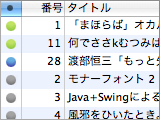
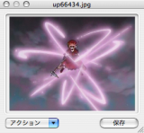
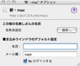

BathyScaphe の新機能
BathyScaphe の新機能
このバージョンの BathyScaphe には、２ちゃんねるのブラウズをさらに快適にするための、いくつかの新機能が含まれています。 BathyScaphe の詳細については、「BathyScaphe ヘルプ」や BathyScaphe の Web サイトを参照してください。
お気に入りの更新チェック
新しい更新チェック機能は、「お気に入り」に登録したスレッドが更新されているかどうかをチェックするための最も簡単な方法です（このバージョンの BathyScaphe では、ネットワークへ高い負担がかからないように、いくつかの制限が設けられています。詳しくは下のリンクをクリックして、確認してください）。
強化されたプレビューインスペクタ
標準のプレビューインスペクタは、フルスクリーン表示やキャッシュ機能が追加され、より快適に画像をプレビューできるようになりました。プレビュー機能はプラグインで提供されているため、他のプラグインを導入してカスタマイズすることも容易です。
スレッドに印を付ける
これまでの「AA スレッド」に加えて、「dat 落ち」「フラグ付き」などの印をスレッドにつけられるようになりました。さらに、掲示板ごとにデフォルトで「AA スレッド」にするかどうかを設定できるようになりました（AA 系の掲示板でとくに便利です）。
その他の新機能
その他の新機能について詳しくは、以下のトピックをそれぞれ参照してください。
- 特定の動作が完了した際に、好きなサウンドを再生することができるようになりました。「サウンド」環境設定で設定できます。
「サウンド」を設定する - 新着レスの位置まで自動的にスクロールすることができるようになりました。「一般」環境設定で選択します。
「一般」を設定する - スレッドを表示しているときに、そのスレッドの所属する掲示板のスレッド一覧に素早く切り替えられるようになりました。
所属する掲示板のスレッド一覧を表示する - “bathyscaphe” スキームの URL によって、直接 BathyScaphe でスレッドを開けるようになりました。
Web ページに貼られたスレッドへのリンクを開く